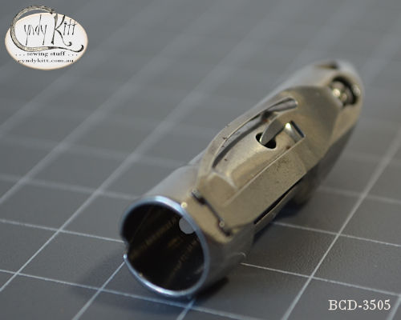
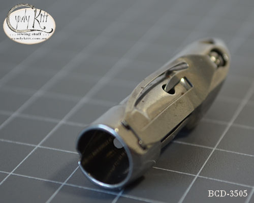
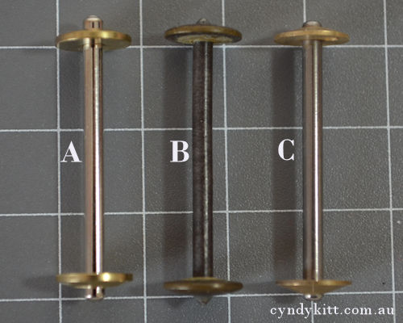
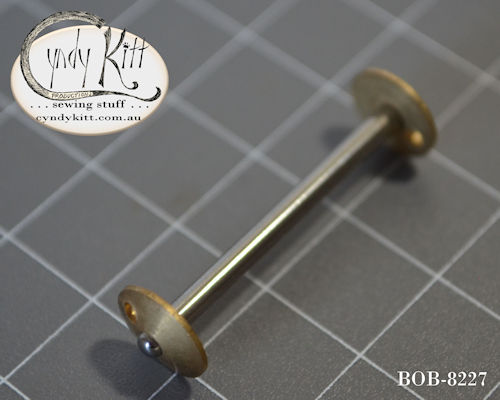
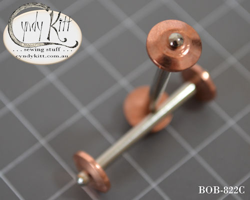

The only "VS" shuttle still in commercial production is the one meant for the Singer 127 and 128 class Singer part #83505
The #83505 shuttle is cross compatible with the earlier #08327 Singer 27 and 28 class, and just as was the situation with Central Bobbin (CB) bobbin cases, the specifications came to be the industry standard, albeit not a universal standard.
The shape of the shuttle is primarily governed by the swing of the shuttle arm and the position of the pivot point. Learn more about Pivot Point Identification


 

Diagram and text from an unidentified German VS Manual

Selection of VS bobbins
comparison photo
"A" is a new Taiwanese made VS bobbin
"B" is an original Singer bobbin
"C" is a new VS bobbin I sourced from China
"H" is from a New Home
"W" is from a White
Unfortunately there are no modern commercially made equivalents for the extra long bobbins used by New Home and Davis or the short hallow VS bobbins used by White.

New Vibrating Shuttle (long) Bobbins made to suit German designed VS (vibrating shuttle) model sewing machines such as Gritzner Selecta, Frister and Rossmann, Anker Regia, Mundlos and several of the models Bebarfald's Dept Store badged as a Blue-Bird
Finally, after a six year search I have tracked down new Chinese made VS bobbins in the German style with the little hole for the winder pin, as well as the above German made models, there were several non-Singer British and US models that feature the gripper pin on the winder. The bobbins are 34mm long with a solid steel shaft and brass ends, and they will also fit the Singer VS models, technically both the bobbin I have stocked for some years this one share the #8228 manufacturers part number (originally designated by Singer in the 1880s) but in my personal stock listings I am designating this one BOB-8227 (the former I designated BOB-8228) for differentiation purposes.




Pack of Six or a Dozen New Vibrating Shuttle (long) Bobbins:
made to suit German designed VS (vibrating shuttle) model sewing machines such as Gritzner Selecta, Frister and Rossmann, Anker Regia, Mundlos and several of the models Bebarfald's Dept Store badged as a Blue-Bird

That's is right, there were a number of Japanese VS models made in the 1950s and '60s, including zigzag models. From what I understand these machines were mostly made to show the superiority of the CB shuttle system, I have not had personal direct experience with a Japanese VS. The photo to the right was supplied by a Canadian collector.


As the distance between the end caps on the Taiwanese version of the 8228 VS bobbin is a smidge smaller than the Singer bobbin you may find it winds to heavily to the left and you may have to manually correct for this.
BOB-8228
Exactly the same as the BOB-822C but with brass rather than copper ends.
BOB-822C
Exactly the same as the BOB-8228 but with copper rather than brass ends.



For current pricing